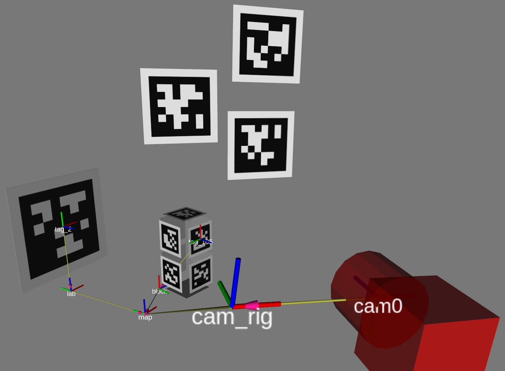

Concepts
Notation for transforms
In the following, transforms written as: $$ \ctrans{T}{A}{B} $$
take coordinates $\cvec{X}{A}$ in frame $\mathrm{A}$ and express them in frame $\mathrm{B}$: $$ \cvec{X}{B} = \ctrans{T}{A}{B}\ \cvec{X}{A} $$Bodies
In TagSLAM, every tag is associated with a body, and tag poses are given relative to that body. Likewise, every camera must be associated with a body, and camera poses are expressed with respect to that body.
Consider the following scene:
In the example above, for the camera to localize itself, the “lab” body’s world pose $\ctrans{T}{lab}{map}$ must be specified, as well as the pose $\ctrans{T}{tag\_2}{lab}$ of the tag with respect to the lab. Also needed is the pose $\ctrans{T}{cam0}{cam\_rig}$ of the camera with respect to the body it is attached to (“cam_rig”).
For the block to be localized by TagSLAM, we only need to provide $\ctrans{T}{tag\_105}{block}$. When the camera sees tags 2 and tag 105 at the same time, it will be able to infer the missing transform $\ctrans{T}{block}{map}$.
Poses
Poses can be classfied according to their time dependence:
-
Static poses: such poses do not change over time, i.e. TagSLAM will maintain a single variable throughout the entire data set. An example would be the pose of the lab $\ctrans{T}{lab}{map}$.
-
Non-static poses: they can potentially change with every frame. An example would be the pose $\ctrans{T}{cam\_rig}{map}$ of the camera rig or the pose $\ctrans{T}{block}{map}$ of the block.
Note that tag and camera poses are always static! That means they do not change with time, i.e. TagSLAM assumes one constant pose over time. However, the body to which the tags or cameras are attached can have a time dependent pose!
Further, static poses are distinguished by prior knowledge:
- Known poses: the pose is already known at the start, for instance from a previous run of TagSLAM.
- Unknown poses: the pose, although static, is unknown at the beginning, and must be discovered on the fly.
Convention for tag poses
Here is how the coordinate axes are oriented when facing an upright AprilTag. Also note the corner numbering in purple.